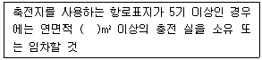
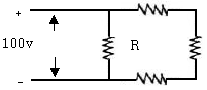
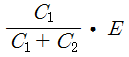
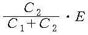
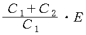
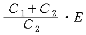

항로표지산업기사 (2007-05-13 기출문제)
1과목: 항로표지일반
1. 다음은 사설항로표지의 육상 시설기준에 대한 설명이다.( )에 들어갈 내용으로 가장 적합한 것은?

- 10
- 20
- 30
- 40
(정답률: 알수없음)

2. 등명 기에 설치하여 주 동작 전구가 단선되었을 때, 일광제어기로부터 제어신호를 받아 예비전구로 자동 전환하는 장치는?
- 섬광기
- 지지금구
- 조류방지봉
- 전구교환기
(정답률: 알수없음)
3. 해도나 등대표에 기재된 지리학적 광달거리는 관측자의 눈의 높이가 평균수면으로부터 몇 m 일 때를 기준으로 계산한 것인가?
- 5
- 10
- 15
- 20
(정답률: 알수없음)
4. IALA 해상부표식의 종류 중 항행원조를 주목적으로 하는 것이 아니고 수로도지에 기재된 구역이나 지물을 표시하는 것은?
- 측방표지
- 특수표지
- 방위표지
- 고립장애표지
(정답률: 알수없음)
5. 야간의 항로표지 특성 표시방법으로 맞는 것은?
- 도색
- 형상
- 두표
- 등질
(정답률: 알수없음)
6. IALA 해상부표식 “B" 방식 적용 국가가 아닌 것은?
- 일본
- 대한민국
- 필리핀
- 영국
(정답률: 알수없음)
7. 항로표지의 일반적 종류 중 광파표지가 아닌 것은?
- 등선
- 부표
- 도등
- 등부표
(정답률: 알수없음)
8. 속력 10노트로 선박이 동경 30° 40` E 의 적도상에서 서쪽으로 24시간 항해하였다면 도착지점의 경도는?
- 34° 40` E
- 26° 40` E
- 34° 40` W
- 26° 40` W
(정답률: 알수없음)
9. 항로표지의 등고에 대한 설명으로 가장 적합한 것은?
- 최고고조면에서 등화 중심까지의 높이
- 최저저조면에서 등화 중심까지의 높이
- 기본수준면에서 등화 중심까지의 높이
- 평균수면에서 등화 중심까지의 높이
(정답률: 알수없음)
10. 항로표지를 모양, 등광, 음향, 전파 등을 이용하여 식별할 때 항로표지 종류에 해당하지 않는 것은?
- 위험표지
- 주간표지
- 야간표지
- 음파표지
(정답률: 알수없음)
11. 북측 방위표지에 사용되는 등질은?
- 연속적인 급섬광 또는 초급섬광
- 초급섬광 다음에 장섬광 다음에 암간
- 9초의 급섬광 또는 초급섬광 다음에 암간
- 3회의 급섬광 또는 초급섬광 다음에 암간
(정답률: 알수없음)
12. IALA부표 식에 조화시켜 사용할 수 있는 항로표지는 몇 종이 있는가?
- 3종
- 4종
- 5종
- 6종
(정답률: 알수없음)
13. 등명기 구조상 하부 등체에 속하지 않는 것은?
- 섬광기
- 전구 교환기
- 일광 제어기
- 회전장치
(정답률: 알수없음)
14. 항로표지 설치 기본요건이 아닌 것은?
- 국제적으로 간편하고 누구나 식별하기 쉬울 것
- 대응성이 있어 수로도지의 참고나 계속관측을 필요로 하는 것일 것
- 일정한 장소에서 항상 고정되어 있어야 하며 정확히 운영될 것
- 평상시에 항해자가 무시할 수 있고 필요에 따라 즉시 이용할 수 있을 것
(정답률: 알수없음)
15. 권한 있는 당국이 설정하여 행정 지도하는 항로이나 법적구속력이 없는 항로는?
- 추천항로
- 권고항로
- 법정항로
- 계획항로
(정답률: 알수없음)
16. 풍압 차나 유압차가 있을 때 진자오선과 선수미선이 이루는 각을 무엇이라 하는가?
- 진침로
- 자침로
- 시침로
- 나침로
(정답률: 알수없음)
17. 해양수산부장관은 안전하고 효율적인 해상교통한경을 조성하기 위하여 몇 년 단위로 항로표지 개발에 관한 기본계획을 수립. 시행 하여야 하는가?
- 3
- 5
- 10
- 15
(정답률: 알수없음)
18. 해협, 수도, 소해수로, 항만 등 위험한 해면을 항해하는 선박을 안전하게 목적지에 유도하기 위하여 설치하는 항로표지를 무엇이라 하는가?
- 유도표지
- 항양표지
- 연안표지
- 장애표지
(정답률: 알수없음)
19. 사설항로표지의 관리자 또는 위탁관리업자가 될 수 있는 자는?
- 미성년자. 금치산자 또는 한정치산자
- 파산선고를 받은 자로서 복권되지 아니한 자
- 형의 집행유예를 받고 그 유예기간 중에 있는 자
- 금고이상의 실형의 선고를 받고 그집행이 종료되거나 집행이 면제된 날로부터 4년이 경과한자
(정답률: 알수없음)
20. 해양수산부장관이 사설항로표지를 수용하고자 하는 경우에는 그 사실을 누구에게 미리 통지하여야 하나?
- 지방해양 수산청장
- 사설항로표지 소유자
- 사설항로표지 위탁관리업자
- 관할 시. 도지사
(정답률: 알수없음)
2과목: 전기, 전자기초
21. 다음 중 절연 저항을 측정하는데 가장 적합한 계기는?
- 메거
- 전류계
- 더블 브릿지
- 휘스톤 브릿지
(정답률: 알수없음)
22. 두 자극 사이에 작용하는 힘은 두 자극의 세기의 곱에 비례하고, 거리의 제곱에 반비례하는 법칙은?
- 쿨롱의 법칙
- 암폐어의 법칙
- 렌쯔의 법칙
- 비오-사바르의 법칙
(정답률: 알수없음)
23. 다음 중 직류기의 3요소가 아닌 것은?
- 전기자
- 게자
- 슬립링
- 정류자
(정답률: 알수없음)
24. 다음 그림과 같이 10[Ω] 저항 4개를 연결하고 직류전압 100[V]를 인가하였다. 저항(R)에 흐르는 전류i[A] 는?

- 2.5
- 5
- 10
- 12.3
(정답률: 알수없음)
25. 다음 중 축전지 용량의 단위는?
- A
- Ah
- W
- Wh
(정답률: 알수없음)
26. 정전용량 C1과 C2의 회로에 E[V] 의 직류 전압을 가할 때 C1과 양단의 전압 [V]은 얼마인가?




(정답률: 알수없음)
27. 다음 중 N 형 반도체를 만들기 위한 불순물로 적합하지 않은 것은?
- 알루미늄
- 인
- 비소
- 안티몬
(정답률: 알수없음)
28. 다음 중 태양전지에 축전장치가 필요한 이유는?
- 태양광이 없을 때 대비하기 위하여
- 빛의 반사를 방지하기 위하여
- 빛을 최대한으로 받아들이기 위하여
- 전지를 견고하게 하기 위하여
(정답률: 알수없음)
29. 직류기의 전기자 반작용의 영향을 줄이는 방법이 아닌 것은?
- 브러시 위치를 전기적 중성점으로 이동시킨다.
- 극수를 늘린다.
- 보상 권선을 설치한다.
- 보극을 설치한다.
(정답률: 알수없음)
30. 다음 중 태양전지의 재료로서 주로 쓰이는 반도체가 아닌 것은?
- Si
- Ag
- In-P
- Ga-As
(정답률: 알수없음)
31. 다음 중 태양전지와 관련 있는 것은?
- 광기전력효과
- 광증폭효과
- 제백효과
- 표피효과
(정답률: 알수없음)
32. 다음 중 1차 전지인 망간건전지에 사용되는 감극제는?
- 이산화망간
- 아연
- 흑연
- 황산
(정답률: 알수없음)
33. 단상 전파 정류기의 DC출력 전력은 단상 반파 정류기 DC출력 전력의 몇 배인가?
- 2
- 3
- 4
- 5
(정답률: 알수없음)
34. 다음 중 직류 분권 발전기의 병렬운전에 필요한 것은
- 집전환
- 브러시의 이동
- 안정저항
- 균압선
(정답률: 알수없음)
35. 다음 중 키르히호프의 제1법칙으로 옳은 것은?
- 전압의 합은 0 이다.
- 전류의 합은 0 이다.
- 주파수의 합은 0 이다.
- 전력의 합은 0 이다.
(정답률: 알수없음)
36. 다음 중 인덕터(L) 만 있는 교류회로에서 전압과 전류의 위상 관계는?
- 동상이다.
- 전류가 앞선다.
- 전압이 앞선다.
- 수시로 변한다.
(정답률: 알수없음)
37. 다음 중 누전이 발생하면 차단하는 장치는?
- ELB
- EOCR
- 플러그
- 콘센트
(정답률: 알수없음)
38. 저항이 100[Ω] 인 전구에 단상 교류전압 220[V] 를 인가할 때, 이 전구에 소비되는 전력은 몇 [W]인가?
- 244
- 372
- 484
- 586
(정답률: 알수없음)
39. 대칭 3상 △결선 부하에서 각 상의 임피던스가 Z= 3 + j4[Ω]이고 선간 전압이 50[v] 일 때 선 전류는 약 몇 [A] 인가?
- 34
- 31
- 24
- 17
(정답률: 알수없음)
40. 직류 전원 공급장치에서 사용되는 필터의 종류는?
- 고역통과 필터
- 저역통과 필터
- 대역통과 필터
- 대역저지 필터
(정답률: 알수없음)
3과목: 광파, 음파 표지
41. 암초나 사주가 있는 위험한 장소 또는 항로의 폭이나 변침점 등을 표시하기 위하여 설치한 것은?
- 등대
- 등표
- 등부표
- 등주
(정답률: 알수없음)
42. 다음 중 눈부심(Glare)의 원인으로서 맞지 않는 것은?
- 광원과 그 주위의 휘도 차가 대단히 크다.
- 광원의 위치와 관측자의 시선 방향이 가깝다.
- 눈이 낮은 휘도 수준에 순응하고 있다.
- 눈에 들어오는 광원의 시각이 작다.
(정답률: 알수없음)
43. 음파표지의 설계시 고려사항으로 맞지 않는 것은?
- 이용범위에 대하여 충분한 음향이 되도록 강력한 무신호를 설치할 것
- 표시부호, 음색, 주기가 정확하여 다른 음향과 쉽게 구분할 수 있을 것
- 기상, 해상의 영향에 의하여 음향이 감쇠되지 않고 전파 방위의 변화가 적도록 설치 위치를 선정할 것
- 부근의 지형에 의하여 음향이 반사 및 굴절될 수 잇도록 위치를 선정할 것
(정답률: 알수없음)
44. 같은 주파수 2개의 위상차가 시간과 함께 변화하지 않을 때, 2개의 광파가 겹쳐 빛의 세기가 강해지거나 약해지는 현상은?
- 분산
- 편광
- 간섭
- 회절
(정답률: 알수없음)
45. 가스(gas) 또는 전구를 사용한 광원에서 나온 빛을 렌즈 또는 반사경을 이용하여 굴절 반사시켜 빛을 모아 외부로 방사하는 조명기구는?
- 등명기
- 도등
- 지향등
- 섬광기
(정답률: 알수없음)
46. 다음 중 빛의 굴절현상을 가장 바르게 설명한 것은?
- 빛의 굴절이란 진행 중에 다른 물질과 만나면 경계면에서 되돌아가는 형상이다.
- 빛의 굴절이란 진행 중에 다른 물질과 만나면 빛의 진행경로가 꺾이는 현상이다.
- 빛의 굴절이란 진행 중에 다른 물질과 만나면 빛의 색이 변하는 현상이다.
- 빛의 굴절이란 진행 중에 다른 물질과 만나면 빛이 투과하는 현상이다.
(정답률: 알수없음)
47. 어떤 소리가 또 다른 소리를 들을 수 있는 능력을 감소시키는 현상을 무엇이라 하는가?
- 감쇠효과
- 음색효과
- 복합음효과
- 매스킹효과
(정답률: 알수없음)
48. 교량 등이나 표지판은 어느 기준점을 고려하여 설치하여야 하는가?
- 최고고조면
- 최저고조면
- 평균수면
- 해저면
(정답률: 알수없음)
49. 등대의 명호범위 안에 위험해역이 있을 때 그 범위를 가리키기 위해서 명호와 같이 직방위로 표시하는 것은?
- 휘호
- 등호
- 분호
- 원호
(정답률: 알수없음)
50. 수면하의 암초, 수면위의 암초, 방파제 끝단 등을 조사하여 통항 선박에 그들 장애물의 소재를 알리기 위하여 설치하는 등은?
- 지향등
- 도등
- 조사등
- 교량등
(정답률: 알수없음)
51. IALA에서 권고한 등질에 관한 설 명중 “일정한 광도를 유지하고 암간이 없다”로 정의된 등질의 종류는?
- 부동광
- 등명암광
- 급섬광
- 군섬광
(정답률: 알수없음)
52. 등대표에 광달거리를 기재할 때 기상학적 시정거리는?
- 5해리
- 10해리
- 15해리
- 20해리
(정답률: 알수없음)
53. 등명기에 설치하는 색 필터의 조건에 합당한 것은?
- 광학적 특성을 고려하여 유리를 사용하지 않는다.
- 색상은 백색, 적색, 녹색, 황색을 이용할 수 있다.
- 색필터가 자외선 등에 의해서 변색 되어도 무방하다.
- 수시로 교환할 수 있도록 지지대에 고정하지 않는다.
(정답률: 알수없음)
54. 다음 중 광파표지의 종류가 아닌 것은?
- 등대
- 등표
- 조사등
- 입표
(정답률: 알수없음)
55. 다음 중 음파표지에 해당하지 않는 것은?
- 에어사이렌
- 모터사이렌
- 전기폰
- 전동기
(정답률: 알수없음)
56. IALA해상부표식(B지역)의 우현표지의 몸체 도색은?
- 홍색
- 녹색
- 황색
- 흑색
(정답률: 알수없음)
57. 다음 중 광달거리에 대한 설명으로 틀린 것은?
- 광력이 약한 등광 일수록 광달거리가 불규칙하다.
- 등고가 너무 높은 등광은 구름에 가려 보이지 않을 수 있다.
- 겨울철에는 등기에 얼음이 붙어 광달거리가 감소할 수 있다.
- 해수의 수온이 기온보다 높으면 광달거리는 증가한다.
(정답률: 알수없음)
58. 항로표지의 등색으로 주로 사용되지 않는 것은?
- Blue
- White
- Red
- Green
(정답률: 알수없음)
59. 다음 항로표지 중 두표가 흑색 구형 2개인 것은?
- 좌현표지
- 북방위 표지
- 고립장애표지
- 특수표지
(정답률: 알수없음)
60. 다음 중 IALA 해상부표식에서 안전수역표지의 설명으로 틀린 것은?
- 두표는 1개의 홍색구형이다.
- 형상은 구형, 구형두표부 망대형 또는 원주형이다.
- 도색은 홍백종선이다.
- 등광은 홍색광이다.
(정답률: 알수없음)
4과목: 전파표지 및 시스템 이용
61. 다음 중 선박통항신호소(VTS)의 운영으로 기대할 수 있는 가장 큰 예방 효과는?
- 선박의 화재사고 예방
- 선박의 폭발사고 예방
- 선박의 기관송상사고 예방
- 항행 상의 접촉사고 예방
(정답률: 알수없음)
62. 전파의 공전잡음의 경감 대책에 해당하지 않는 것은?
- 수신기의 실효대역폭을 가능한 크게 한다.
- 안테나 Notch Filter를 설치한다.
- 송신전력을 크게 한다.
- 안테나의 지향성을 예민하게 하여 이득을 높인다.
(정답률: 알수없음)
63. 다음 GPS에 대한 설명 중 틀린 것은?
- 삼각측량의 원리를 이용한 거리측량 방식
- GPS는 전 세계적인 위치결정방식이라는 의미의 명칭
- 전 세계적으로 공동좌표계(WGS84 측지계)를 사용함
- 쌍곡선과 시간차의 2차원 측정방식을 사용함
(정답률: 알수없음)
64. 미국의 NAVSTAR GPS 와 러시아의 GLONASS를 총칭하여 무엇이라 하는가?
- GBSS
- GNSS
- GCSS
- GDSS
(정답률: 알수없음)
65. VTS에서 항만의 효율성을 고려하여 물류정보를 통항의 안전 정보에 통합하는 시스템을 무성이라 하는가?
- VIMIS
- VTMIS
- TSMIS
- VRIS
(정답률: 알수없음)
66. DGPS에서 사용하는 해상 Radio Becon의 주파수 대역은?
- 245 ㎑ ~ 283.5㎑
- 283.5㎑ ~ 325 ㎑
- 325 ㎑ ~ 367.5 ㎑
- 367.5 ㎑ ~ 4⑤ ㎑
(정답률: 알수없음)
67. 다음 중 로란 -C 통제소에서 해당 종국을 Blink 시켜야 하는 상황이 아닌 것은?
- 감시 국으로부터 수신된 TD가 허용치를 벗어났을 때
- 감시 국으로부터 수신된 각 송신국의 ECD가 허용치를 벗어났을 때
- 종국에서 TINO가 허용치를 벗어났을 때
- 감시 국으로부터 수신된 송신국의 전게강도가 표준 값보다 -2dB 이상일 때
(정답률: 알수없음)
68. 주파수 감응형 레이더비컨 송수신기의 구성을 가장 알맞은 것은?
- 수신부(Rx), 송신부(Tx), 제어부(CONT), 전원부(PWR)
- 수신부(Rx), 송신부(Tx), 발진부(Osc), 전원부(PWR)
- 수신부(Rx), 송신부(Tx), 연산부(FADJ), 타이머(TIMER)
- 수신부(Rx), 송신부(Tx), 증폭부(AMP), 레벨검출부(LD)
(정답률: 알수없음)
69. 전파의 주파수에 의한 분류 중 맞는 것은?
- LF(장파) : 0 ㎑ - 30 ㎑
- MF(중파) : 30 ㎑ - 300 ㎑
- HF(단파) : 30 ㎒ - 300 ㎒
- SHF(마이크로파) : 3㎓ - 30㎓
(정답률: 알수없음)
70. 다음 중 레이더의 방위분해능과 가장 관계가 깊은 것은?
- 펄스폭
- 수평빔폭
- 수직빔폭
- 주파수
(정답률: 알수없음)
71. 다음 정보 중에서 레이더 비콘을 이용하여 제공할 수없는 정보는?
- 거리
- 방위
- 고도
- 식별상의 정보
(정답률: 알수없음)
72. 로란-C 수신기의 안테나로 일반적ㅇ로 사용하는 종류로 가장 타당한 것은?
- 야기 안테나
- 루프안테나
- 휩(채찍)형 안테나
- 슬롯 안테나
(정답률: 알수없음)
73. 최소의 GRI를 결정하는데 고려되어야 할 사항과 관계적은 것은?
- 체인내의 종국의 수
- 체인의 위상코드
- 코딩딜레이
- 기선장
(정답률: 알수없음)
74. DGPS는 RTCM-SC104 포맷에 의해 비교적 느린 속도로 메시지를 전송하는데 이용되는 변조방식은?
- ASK
- FSK
- MSK
- PSK
(정답률: 알수없음)
75. 지표파는 지면의 도전율에 따라 감쇠 차이가 심하다. 다음 중 도전율이 가장 큰 것은?
- 시내
- 모래땅
- 담수
- 해수
(정답률: 알수없음)
76. 복원중 (정확한 문제내용과 보기내용을 아시는분께서는 오류 신고를 통하여 문제내용과 보기 내용 작성 부탁드립니다.) (문제 오류로 정답은 4번입니다.)
- 복원중
- 복원중
- 복원중
- 복원중
(정답률: 알수없음)
77. 전파의 성질에 관한 설명 중 틀린 것은?
- 전파는 균일한 매질 내에서는 일정한 속도로 직진한다.
- 전파는 진행 중에도 주파수는 일정히 유지된다.
- 진공 속에서의 전파속도는 빛의 속도보다 빠르다.
- 전파는 성질이 다른 매질의 경계면에서는 일부 반사 또는 투과의 성질이 있다.
(정답률: 알수없음)
78. 전파표지의 특징에 대한 설명 중 적당하지 않은 것은?
- 다른 항로표지시설에 비해 기상조건에 영향을 적게 받는다.
- 광파나 음파표지시설과 달리 수신 설비 등이 필요하다.
- 전파의 전파(傳播)범위가 커서 넓은 해역에서 사용이 가능하다.
- 주로 전리층의 반사파를 이용하기 때문에 사용범위가 넓다.
(정답률: 알수없음)
79. 전파표지 측정치의 신뢰도를 나타내는 지표로서 표준편차(Standard Deviation)의 관계식은?
- 0.7071/h
- 0.5642/h
- 0.4769/h
- 0.3745/h
(정답률: 알수없음)
80. 로란-C의 90㎑에서 110㎑ 대역 바깥쪽 주파수에서 발사되는 에너지의 총량은 전 발사에너지의 몇 % 미만이어야 하는가?
- 1% 미만
- 2% 미만
- 3% 미만
- 4% 미만
(정답률: 알수없음)